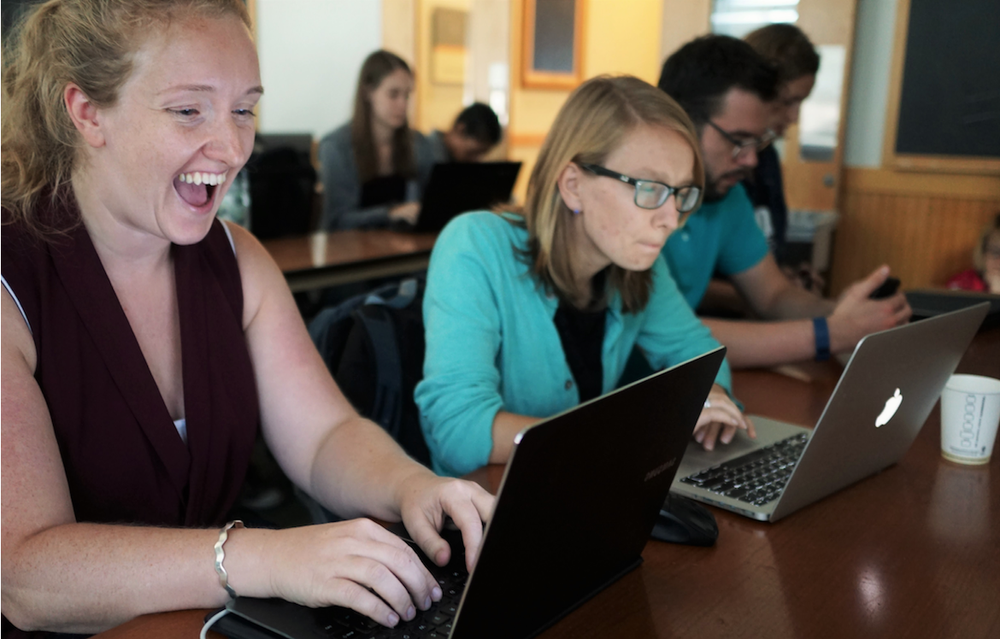

July 30th - August 10th, 2018
NeuroHackademy
Ariel Rokem, University of Washington eScience Institute
Follow along at:

Welcome!
The era of brain observatories
Allen Institute for Brain Science
n=1,200
n=~10,000
n=~10,000
n=500,000
Opportunities
New data sets will enable important new discoveries
New methods
Data-driven discovery
Challenges
Methods that work in standard use may not apply to large datasets
Algorithms are needed to extract information from complex high-dimensional data
Sociotechnical structures are strained: collaboration, publication, training
Reproducibility and open science
Neurohackademy
A summer school
A conference
A hackathon
Neuroimaging and data science
Tools and practices for
Open
Reproducibile
Data intensive
Neuroscience

Neurohackademy
A Summer Institute in Neuroscience and Data Science 
The plan
Week 1: focus on learning
Week 2: focus on hacking
People
Organizers
Instructors
You all:
Graduate students, postdocs, faculty, research staff, ...
... and a few that defy any of these definitions
Code of conduct
Now some of you might be thinking
"I don't belong here"
"I am not really a great programmer"
"And I don't yet know enough neuroscience to make a real contribution"
"Wnen others find out, they won't want to work with me"
The imposter syndrom is real!
But we're really all here to learn
Thanks!

Contact information